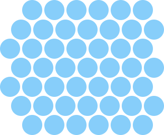

1.18.2 The World
The main data structure for Chat Noir is world. It represents the current state of a game of Chat Noir, and comes with a few functions that construct empty worlds and test cases for them.
The main structure definition is the world struct.
(define-struct/contract world ([board (listof cell?)] [cat posn?] [state (or/c 'playing 'cat-won 'cat-lost)] [size (and/c natural-number/c odd? (>=/c 3))] [mouse-posn (or/c #f posn?)] [help? boolean?]) #:transparent)
board: representing the state of the board as a list of cells, one for each circle on the game.
cat: a posn indicating the position of the cat (interpreting the posn in the way that they are interpreted for the board field),
- state: the state of the game, which can be one of
'playing, indicating that the game is still going; this is the initial state.
'cat-won, indicating that the game is over and the cat won, or
'cat-lost, indicating that the game is over and the cat lost.
size: an odd natural number indicating the size of the board
mouse-posn: a posn for the location of the mouse (or #f if the mouse is not in the window), and
help?: a boolean indicating if help should be shown.
A cell is a structure with two fields:
(define-struct/contract cell ([p posn?] [blocked? boolean?]) #:transparent)
The coordinates of the posn in the first field indicate a position on the hexagonal grid. This program reprsents the hexagon grid as a series of rows that are offset from each other by 1/2 the size of the each cell. The y field of the posn refers to the row of the cell, and the x coordinate the position in the row. This means that, for example, (make-posn 1 0) is centered above (make-posn 1 0) and (make-posn 1 1).
The boolean in the blocked? field indicates if the cell has been clicked on, thus blocking the cat from stepping there.
The empty-board function builds a list of cells that correspond to an empty board. For example, here’s what an empty 7x7 board looks like, as a list of cells.

It contains 7 rows and, with the exception of the first and last rows, each row contains 7 cells. Notice how the even and odd rows are offset from each other by 1/2 of the size of the cell. The first and last row are missing their left-most cells because those cells are useless, from the perspective of the gameplay, Specifically, all of the neighbors of the missing cells are also on the boundary and thus the cat would win if it ever steps on one of those neighboring cells, ending the game.
The 3x3 board also has the same property that it consists of three rows, each with three cells, but where the first and last row are missing their left-most cells.
And here is how that board looks as a list of cells.
(test (empty-board 3) (list (make-cell (make-posn 0 1) #f) (make-cell (make-posn 1 0) #f) (make-cell (make-posn 1 1) #f) (make-cell (make-posn 1 2) #f) (make-cell (make-posn 2 0) #f) (make-cell (make-posn 2 1) #f) (make-cell (make-posn 2 2) #f)))
The empty-board function consists of two (nested) calls to build-list that build a list of lists of cells, one for each pair of coordinates between 0 and board-size. Then, append flattens the nested lists and the filter expression removes the corners.
(define/contract (empty-board board-size) (-> (and/c natural-number/c odd? (>=/c 3)) (listof cell?)) (filter (not-corner? board-size) (apply append (build-list board-size (λ (i) (build-list board-size (λ (j) (make-cell (make-posn i j) #f)))))))) (define/contract ((not-corner? board-size) c) (-> (and/c natural-number/c odd? (>=/c 3)) (-> cell? boolean?)) (not (and (= 0 (posn-x (cell-p c))) (or (= 0 (posn-y (cell-p c))) (= (- board-size 1) (posn-y (cell-p c)))))))
Building an empty world is simply a matter of building an empty board, finding the initial position of the cat and filling in all of the fields of the world struct. For example, this is the empty world of size 3. It puts the cat at (make-posn 1 1), sets the state to 'playing, records the size 3, and sets the current mouse position to #f and the state of the “h” key to #f.
(test (empty-world 3) (make-world (empty-board 3) (make-posn 1 1) 'playing 3 #f #f))
The empty-world function generalizes the example by computing the cats initial position as the center spot on the board.
(define/contract (empty-world board-size) (-> (and/c natural-number/c odd? (>=/c 3)) world?) (make-world (empty-board board-size) (make-posn (quotient board-size 2) (quotient board-size 2)) 'playing board-size #f #f))
The add-n-random-blocked-cells function accepts a list of cells and returns a new list of cells where n of the unblocked cells in all-cells are now blocked.
If n is zero, of course, no more cells should be blocked, so the result is just all-cells. Otherwise, the function computes unblocked-cells, a list of all of the unblocked cells (except the cat’s initial location), and then randomly picks a cell from it, calling block-cell to actually block that cell.
(define/contract (add-n-random-blocked-cells n all-cells board-size) (-> natural-number/c (listof cell?) (and/c natural-number/c odd? (>=/c 3)) (listof cell?)) (cond [(zero? n) all-cells] [else (define unblocked-cells (filter (λ (x) (define cat-cell? (and (= (posn-x (cell-p x)) (quotient board-size 2)) (= (posn-y (cell-p x)) (quotient board-size 2)))) (and (not (cell-blocked? x)) (not cat-cell?))) all-cells)) (define to-block (list-ref unblocked-cells (random (length unblocked-cells)))) (add-n-random-blocked-cells (sub1 n) (block-cell (cell-p to-block) all-cells) board-size)]))
The block-cell function accepts a posn and a list of cell structs and updates the relevant cell, setting its blocked? field to #t.